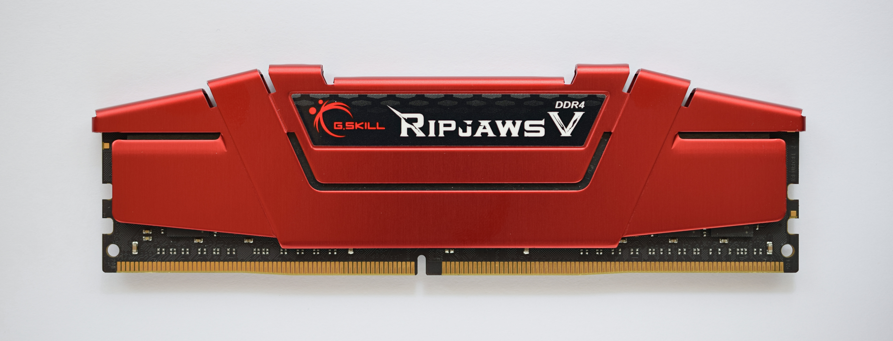

Architecture de von Neumann
Le problème de départ
Les premiers ordinateurs, comme l'ENIAC (1945), étaient capables de faire des calculs extraordinairement rapides. Mais ils avaient un défaut majeur : pour changer de programme, il fallait physiquement recâbler la machine. Six mathématiciennes, les premières programmeuses de la machine, devaient établir la séquence des opérations puis la câbler : des centaines de fiches à rebrancher et d'interrupteurs à repositionner, ce qui prenait plusieurs jours, alors que le calcul lui-même ne durait que quelques secondes.
Le programme n'existait pas en mémoire : il était inscrit dans le câblage physique de la machine. Changer de tâche revenait à reconstruire une partie de l'ordinateur.
Concrètement
Imaginons qu'à chaque fois que tu veux utiliser une nouvelle application sur ton téléphone, un technicien doive ouvrir l'appareil et ressouder des composants. C'était exactement la situation avant l'architecture de von Neumann.
La solution proposée par von Neumann en 1945 : stocker le programme dans la mémoire, au même endroit que les données. Ainsi, changer de programme revient simplement à charger de nouvelles instructions en mémoire, sans toucher au matériel. C'est le principe du programme enregistré, et c'est le fonctionnement de tous les ordinateurs actuels.
L'architecture de von Neumann est ainsi devenue le modèle fondamental de la plupart des ordinateurs actuels. Elle tire son nom du mathématicien et physicien John von Neumann, qui l'a formalisée en 1945 dans son rapport sur l'EDVAC (Electronic Discrete Variable Automatic Computer).
1. Principe fondamental
Le principe central de l'architecture de von Neumann est le programme enregistré : les instructions du programme et les données sont stockées dans la même mémoire.
2. Les composants principaux
L'architecture de von Neumann se compose de quatre éléments essentiels :
2.1 L'unité centrale de traitement (CPU)
Le processeur (CPU - Central Processing Unit) est le cerveau de l'ordinateur. Il se divise en deux sous-unités :
a) L'Unité Arithmétique et Logique (UAL)
L'UAL (ALU en anglais) effectue les opérations :
- Arithmétiques : addition, soustraction, multiplication, division
- Logiques : AND, OR, NOT, XOR (les opérations booléennes, que tu verras au chapitre suivant)
- Comparaisons : égalité, supériorité, infériorité
Elle travaille sur un registre particulier, l'accumulateur, qui contient la valeur en cours de calcul et reçoit le résultat.
l'UAL est le seul endroit de la machine où un calcul a lieu, et elle ne sait faire que des opérations élémentaires.
b) L'Unité de Contrôle (UC)
L'Unité de Contrôle orchestre le fonctionnement de l'ordinateur :
Elle ne fait qu'une seule chose, indéfiniment : répéter un cycle en trois temps.
- Elle lit les instructions en mémoire (
fetch) - Elle les décode pour comprendre quelle opération effectuer (
decode) - Elle commande les autres composants pour exécuter l'instruction (
execute)
On appelle ça le cycle decode-fetch-execute
L'UC répète ce cycle en boucle et ne sait rien faire d'autre. Sa force réside uniquement dans sa vitesse d'exécution, dictée par sa fréquence d'horloge : un processeur cadencé à 3 GHz effectue ainsi 3 milliards de cycles par seconde.
c) Un processeur, ou plusieurs ?
La machine décrite ici n'a qu'une unité de traitement : elle exécute une instruction à la fois, dans l'ordre où le compteur ordinal les désigne. C'est une architecture monoprocesseur, et c'est celle que tu manipuleras dans tout ce chapitre.
Les machines actuelles sont multiprocesseur : elles contiennent plusieurs unités de traitement complètes, appelées cœurs, le plus souvent gravées sur la même puce. Chacune a son compteur ordinal et déroule son propre cycle, et elles partagent la mémoire.
Ce qu'il faut en retenir, et rien de plus
Avec un seul cœur, un ordinateur qui semble faire plusieurs choses à la fois ne fait qu'alterner très vite entre elles. Avec plusieurs cœurs, plusieurs instructions sont exécutées réellement au même instant.
Deux réserves, qui évitent la conclusion trop rapide :
- Deux cœurs ne divisent pas le temps d'un programme par deux. Il faut que le travail puisse être découpé en parties indépendantes, et beaucoup de tâches ne s'y prêtent pas. Si les parties doivent constamment s'attendre, on gagne peu. Par contre, 2 programmes lancés au même instant peuvent s'exécuter sur des coeurs différents automatiquement.
- Le modèle de von Neumann n'est pas remis en cause. Chaque cœur fait exactement ce que décrit ce chapitre : fetch, decode, execute, sur une mémoire où instructions et données cohabitent. Il y en a simplement plusieurs.
Nous n'irons pas plus loin cette année : ce qui suit, écrire et dérouler des programmes, se fait sur un seul processeur.
2.2 La mémoire
Le processeur est un calculateur hors pair, mais il ne peut pas travailler à vide. Pour réaliser une opération aussi simple que 3 + 2, il a besoin qu'on lui fournisse ses opérandes : le nombre 3 et le nombre 2. C’est là qu'intervient la mémoire : elle sert de réservoir pour stocker les données nécessaires à un calcul.

La mémoire stocke à la fois :
- Les instructions du programme (le code)
- Les données manipulées par le programme
Chaque emplacement mémoire possède une adresse unique qui permet d'y accéder.
Types de mémoire
- Mémoire vive (RAM) : rapide, volatile (effacée à l'extinction)
- Mémoire morte (ROM) : contient l'UEFI (anciennement BIOS), non volatile, le tout premier programme qui se lance à l'allumage pour réveiller les composants de l'ordinateur et lui apprendre à démarrer
2.3 Les dispositifs d'entrée/sortie (E/S) (I/O)
Les périphériques d'entrée/sortie permettent la communication avec l'extérieur :
- Entrée : clavier, souris, capteurs, réseau
- Sortie : écran, imprimante, haut-parleurs
Et le disque dur ?
Le disque dur (HDD) et le SSD sont des dispositifs d'entrée/sortie, même si on les appelle souvent "mémoire de stockage". Pourquoi ?
- Ils permettent de lire des données (entrée) et d'écrire des données (sortie)
- Ils sont externes au modèle de base de von Neumann : ni le CPU ne peut les utiliser directement pour exécuter des instructions, ni ils ne font partie de la mémoire vive
- Avant d'exécuter un programme stocké sur disque, il faut le charger en RAM
Distinction mémoire vs stockage
- Mémoire (RAM) : rapide, volatile, directement accessible par le CPU pour lire les instructions et les données
- Stockage (disque dur, SSD) : lent, persistant, accessible via les bus d'E/S. Le CPU ne peut pas exécuter directement du code sur le disque car tout serait extrêmement lent. Tout doit d'abord être transféré en RAM.
2.4 Les bus
Tous les composants présentés communiquent par des liaisons matérielles. Ca n'est pas magique. Ils ont branchés ensemble avec des "fils" qu'on appele des bus.
Les bus sont les canaux de communication qui relient les composants. Il y en a trois, et chacun porte une information d'une nature différente :
- Bus d'adresses : où, c'est-à-dire l'adresse de la case concernée
- Bus de données : quoi, c'est-à-dire le contenu, un nombre
- Bus de contrôle : quoi faire, c'est-à-dire lire ou écrire
Les trois travaillent en même temps, et c'est leur combinaison qui donne un sens à l'opération. Sans le bus de contrôle, la mémoire verrait passer une adresse et une valeur sans savoir si on lui demande de lire ou d'écrire.
Imaginez que le processeur (CPU) veuille stocker le nombre 42 dans la case mémoire numéro 150. Pour ce faire, il envoie trois informations simultanément :📬 Le bus d'adresses (Où) : C'est l'étiquette sur la boîte. Le processeur y écrit : « Box n°150 ».🎁 Le bus de données (Quoi) : C'est l'objet que l'on transporte. Le processeur y dépose la valeur : « 42 ».📋 Le bus de contrôle (Quoi faire) : C'est l'ordre écrit sur la feuille. Le processeur coche la case : « ÉCRIRE » (enregistrer).
3. Diagramme récapitulatif à connaître
graph TB
subgraph CPU["Unité Centrale (CPU)"]
UC["Unité de Contrôle<br/>(UC)"]
UAL["Unité Arithmétique<br/>et Logique (UAL)"]
UC <--> UAL
end
subgraph BUS["BUS"]
BA["Bus d'adresses"]
BD["Bus de données"]
BC["Bus de contrôle"]
end
MEM["Mémoire<br/>(RAM)"]
IO["Entrées/Sorties<br/>(E/S)"]
CPU <--> BUS
BUS <--> MEM
BUS <--> IO
style CPU fill:#e1f5ff
style BUS fill:#fff4e1
style MEM fill:#f0f0f0
style IO fill:#f0f0f0Résumé
- L'architecture de von Neumann repose sur le principe du programme enregistré
- Quatre composants principaux : CPU (UC + UAL), mémoire, E/S, bus
- Trois bus, qui disent où, quoi et quoi faire
- Le CPU répète un cycle : fetch-decode-execute, et le compteur ordinal désigne la prochaine instruction
- Rien, dans la mémoire, ne distingue une instruction d'une donnée : c'est le compteur ordinal qui décide
Sources :
- von Neumann, J. (1945). First Draft of a Report on the EDVAC. University of Pennsylvania.
- Tanenbaum, A. S. (2013). Structured Computer Organization (6e éd.). Pearson.